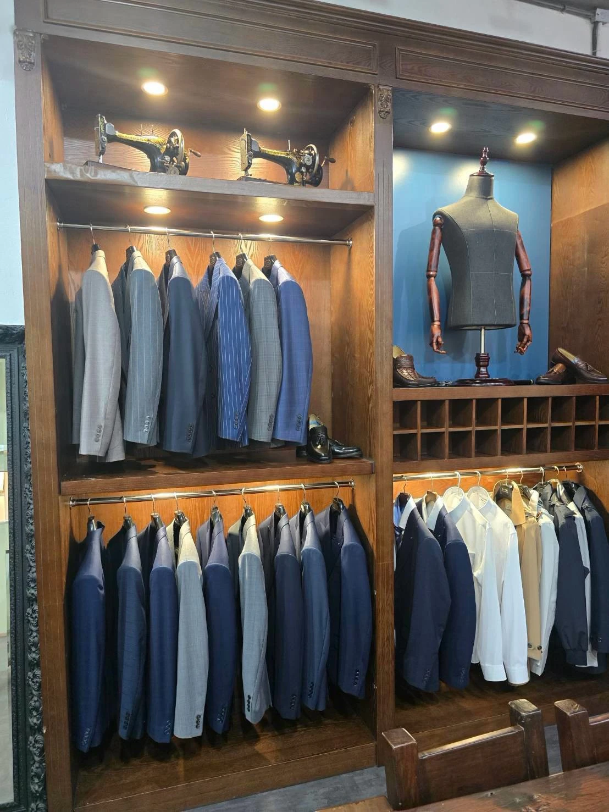
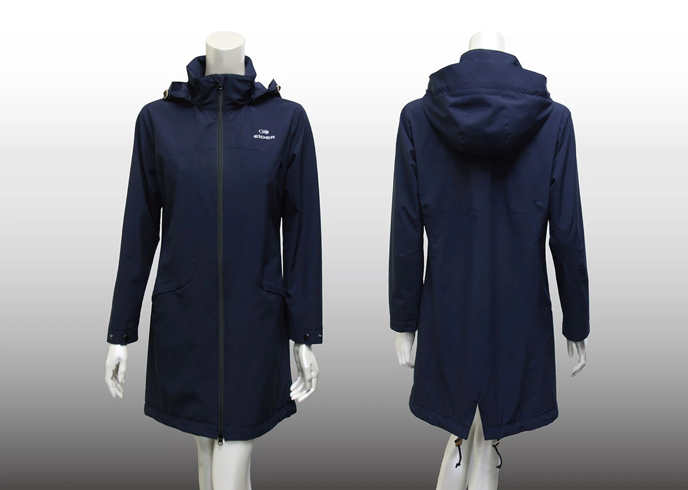

詢問此類款式 ↗
詢問此類款式 ↗PERSONAL / 個人訂製
淺灰西服
明亮色調，呈現俐落而自然的比例。
FIND YOUR DIRECTION
選一個接近你的需求，
找到合適的訂製方向。

OUR SERVICES
不同的穿著需求，同樣值得被細心對待。

好的服裝，
在細節裡看得見。
THE MAGGIO WAY
服裝的質感，不只在第一眼。肩線是否自然、活動是否舒適、整體是否俐落，都來自對製作細節的重視。
野木以既有的打版、製作與整燙經驗，將穿著者的需求放進流程，讓個人風格與團隊形象都能被好好呈現。
SELECTED WORK
詢問此類款式 ↗PERSONAL / 個人訂製
明亮色調，呈現俐落而自然的比例。
CORPORATE / 團體制服
透過套裝搭配，建立一致的專業形象。

詢問此類款式 ↗OUTERWEAR / 機能外套
依工作場景，討論外層與穿著配置。
歷年作品與款式參考，實際製作細節請洽詢確認。
A SIMPLE PROCESS
從用途、品項與預計時程開始。
討論觸感、配色與版型方向。
依確認內容安排尺寸與製作。
完成整備，說明後續照護方式。
LET’S MAKE IT YOURS
告訴我們你的需求，一起找到合適的款式與製作方向。